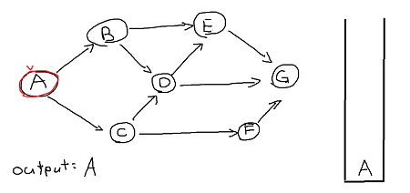
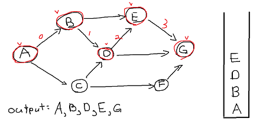
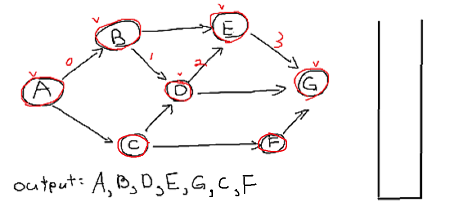
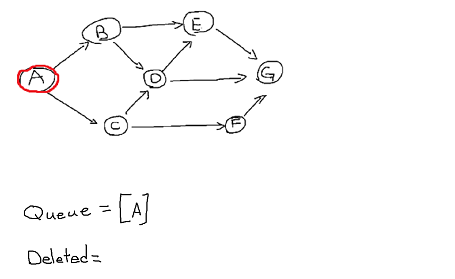
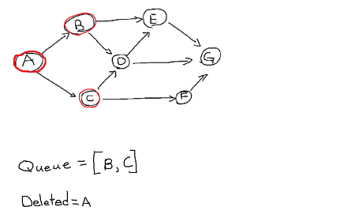
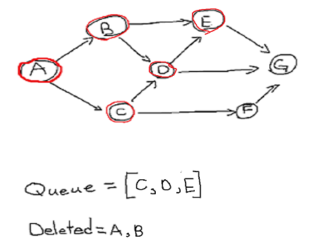
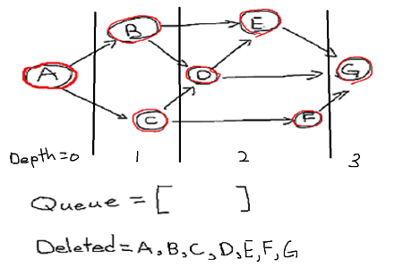

date posted: 2020-02-10
There are two main methods when it comes to searching graph data structures, trees, string, and much more which are depth first search and breadth first search.
DFS for short uses stack data structure(LIFO) and it is edge based technique. Its goal is to find unvisited vertex then go down deep until no more vertex to visit then move backwards until there is another vertex to visit that has not been visited already.
In real life it is like hiking a trail with multiple split trail. You would make a choice at each split trail until you meet a dead end, and at that time you would go backwards to previous split way and from there you would goto other way if that way was not visited already.
Lets go through DFS using a graph below by following:
1. choose a vertex to perfrom DFS, I will choose vertex A. Mark it visited, output it and insert into a stack.

2. There are two adjacency vertex that have not been visited, you could pick either one but
I will go ahead in alphabetical order and choose vertex B.
3. following step 2 we get B -> D -> E -> G.
4. Now since G has no adjacency vertex we pop it and go back its path.

Now we are at vertex E. Its only adjacency vertex is G but has been visited already so pop it.
Similiary pop vertex D, B.
Now since vertex A has unvisited adjacency vertex C repeat steps 1~3.
1. Goto vertex C, mark it visited, insert to stack and output it.
2. We are at vertex C. Since D has been visited we go down to F.
3. We are at vertex F. No vertex to visit so time to go backwards.
4. Pop F, C. Now we are left with vertex A its adjacency vertex all been visited so pop it.
You can see that our stack is empty which implies that all vertices has been visited thus we just successfully finished depth first search.
BFS is often used for finding shortest path, or whether or not there exists path between two verticies. It is vertex based technique and uses queue data structure.
Unlike DFS where it goes deep down into one path BFS searches layer by layer, considering all other possibilities before going deeper down. One application of BFS can be seen in social network where your direct friends would be considered layer 1 and friends of friend are in layer 2 because you cannot reach them directly but through your link(friend) and so on...
For simplicity we will use same graph from DFS example and perfrom BFS this time by following following steps:
1. Choose starting point, vertex A. Mark it visited and insert into queue.
2. delete first item in queue which is vertex A and insert all its adjacency vertex and mark them as visited. Doesn't matter which vertex to insert first but we will just follow alphabetical order and insert vertex B first.
Now first item in queue is B. Delete it and insert its adjacent vertices into the queue and mark them visited.
Repeating the steps, we will delete vertex C from queue and insert its adjacent vertices but since
D is already visited, just insert F.
Do the same for vertex D: since E is visited insert G into the queue.
Now we have delete E, F, G in order and since all of them have no unvisited adjacent vertex nothing to insert to queue and it becomes empty.
Now we have successfully done breadth first search. If you at deleted vertex we can see that
they are in order of their depth, vertex A have depth 0, {B,C} have depth = 1, {D, E, F} have depth = 2,
and finally {G} has depth =3.
So we searched all friends first, then friend's friends, and so on...